Jessica Jones (Terre-616)
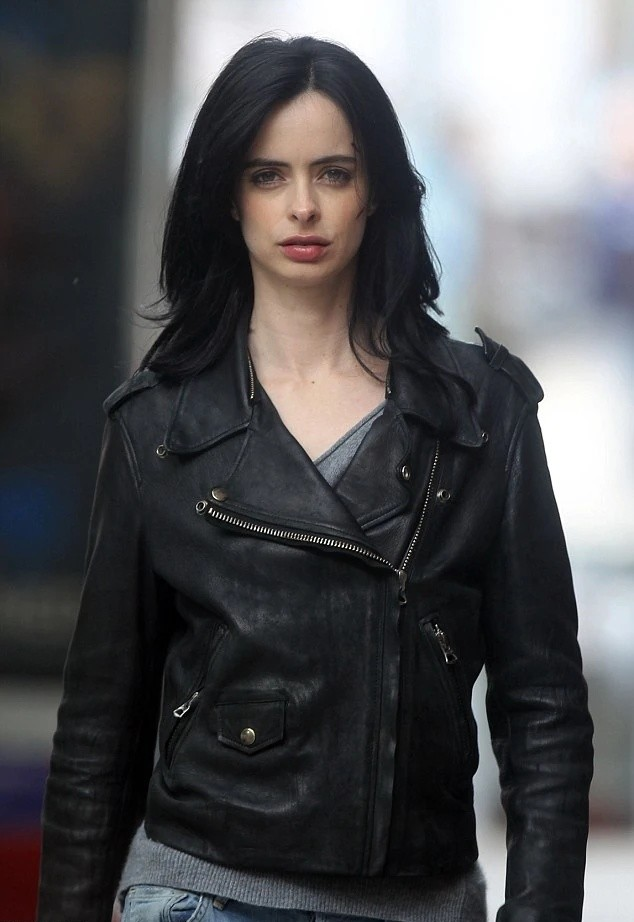
Origines :
Jessica Campbell est née et a grandi à Forest Hills, dans le Queens, à New-York.
Elle a fréquenté le lycée de Midtown avec Peter Parker, où ils ont suivi plusieurs cours ensemble.
Elle a eu le béguin pour lui, mais ne lui a jamais avoué.
Elle le suivit jusqu'au Hall des Sciences de New-York, où elle s'apprêtait à l'aborder juste avant qu'il soit mordu par l'araignée radioactive qui lui a conféré ses pouvoirs.
Il quitta rapidement le bâtiment, et Jessica le suivit avant de le perdre de vue et qu'elle faillit être renversée par un camion d'Ajax Atomic Labs.
Quelques jours plus tard, elle partit avec sa famille en voyage à Disney World, grâce à des billets offerts par le patron de son père, Tony Stark.
Sur le chemin du retour, Jessica se disputa avec son frère Phillip, ce qui déconcentra son père et la voiture fit une sortie de route, percutant un convoi militaire qui transportait des produits chimiques.
Toute sa famille périt, et elle fut gravement exposée à ces produits.
Après plusieurs mois de coma, Jessica fut placée dans un orphelinat, la Maison Moore pour enfants en difficulté, puis adoptée par la famille Jones, dont elle prit légalement le nom.
A son réveil, Jessica découvrit qu'elle avait développé des pouvoirs surhumains, comme une force et une résistance accrue.
Sa nouvelle famille la réinscrivit au lycée Midtown, où elle fut rejetée et harcelée par ses camarades, et notamment Flash Thompson, la brute de l'école.
Peter tenta de se lier d'amitié avec Jessica, pensant qu'elle partageait son deuil, après que lui ait perdu son oncle Ben.
Mais Jessica interpréta mal cette gentillesse et se rebella contre lui, croyant qu'il avait simplement pitié d'elle.
En fuyant, elle découvrit qu'elle pouvait voler, mais elle perdit rapidement le contrôle et s'écrasa dans l'Hudson, avant d'être secourue par Thor.
En testant ses pouvoirs, elle atterrit accidentellement sur le Scorpion, qui cambriolait une laverie automatique, suffisamment fort pour l’assommer.
Il sera arrêté dans la foulée.
Elle assistera ensuite à un combat entre Spider-Man et l'Homme-Sable qui lui fera réaliser qu'elle pouvait utiliser ses pouvoirs pour faire le bien.
Son premier nom d'héroïne sera Jewel, et sera active pendant environ quatre ans.
Ses exploits durant cette période sont peu connus, car les médias grand public ne suivaient pas réellement ses faits-et-gestes, préférant se focaliser sur les autres héros de l'époque.
Un jour, elle tomba par hasard sur une bagarre dans un restaurant et découvrit que Zebediah Killgrave, alias l'Homme Pourpre, avait incité les hommes à se battre.
C'est là qu'il prit le contrôle de Jessica et lui ordonna de « s'occuper de la police » afin qu'il puisse terminer son repas, et elle s'exécuta.
Elle fut ensuite capturée par l'Homme Pourpre et retenue prisonnière pendant huit mois, mais sans jamais être utilisée à des fins sexuelles.
Cependant, il l'utilisa comme complice dans ses machinations et elle blessa des personnnes.
Finalement, après qu'un article de journal ait mis Killgrave en colère, elle fut envoyée attaquer Daredevil et tuer quiconque se mettrait en travers de son chemin.
Jessica fut désorientée une fois hors de portée des phéromones de Killgrave, mais étant sous son contrôle depuis si longtemps, elle resta concentrée sur sa mission.
Elle finit par attaquer la Sorcière Rouge car son costume était rouge, comme celui de Daredevil.
Après l'avoir frappé, elle échappa enfin à l'emprise de Killgrave.
Croyant que les Avengers et les Defenders rassemblés l'attaquaient, Jessica prit la fuite, mais fut rapidement rattrapée et presque tuée par la Vision et Iron Man, la plongeant à nouveau dans le coma.
Jean Grey, des X-Men, l'aida à sortir de ce coma, et après plusieurs mois de convalescence, elle commença à fréquenter Clay Quartermain, et on lui proposa de rejoindre les Avengers en tant qu'agent de liaison du SHIELD, offre qu'elle refusa.
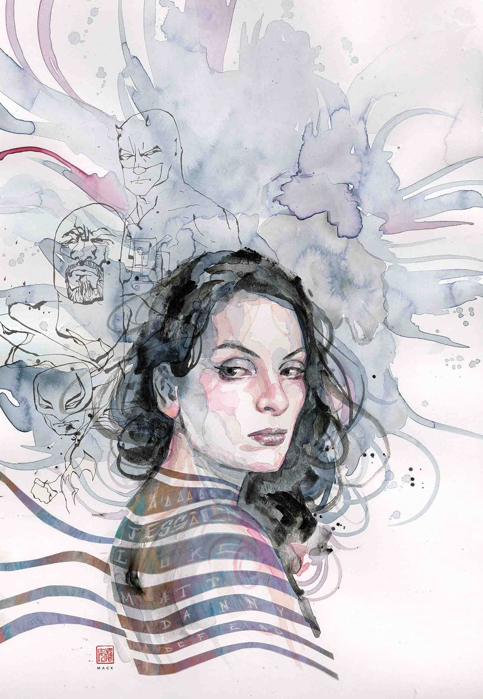
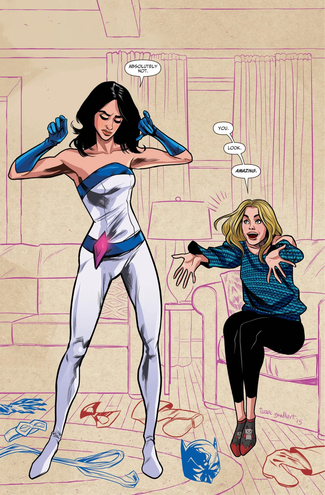
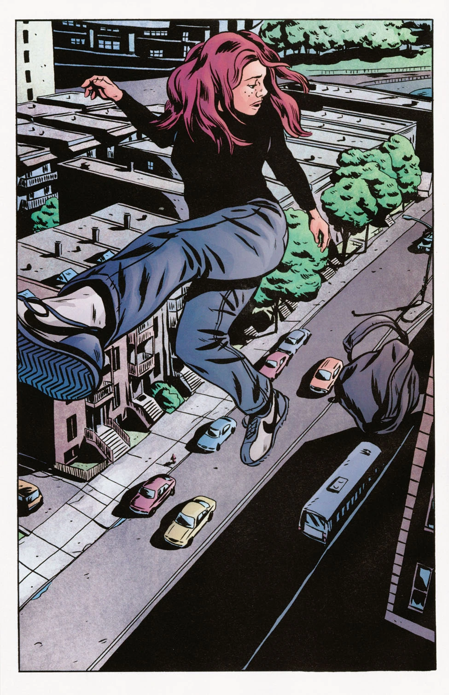
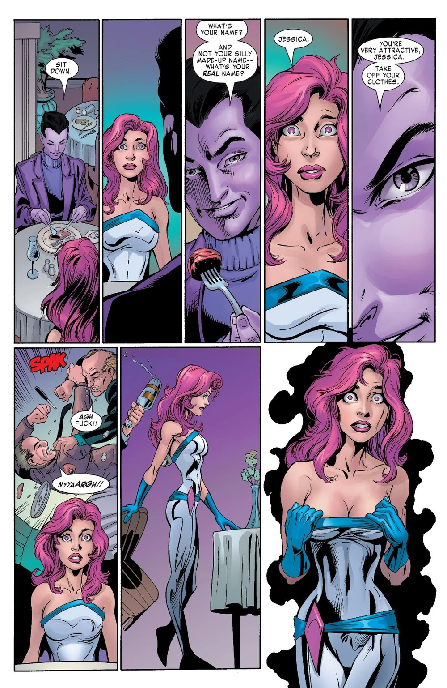
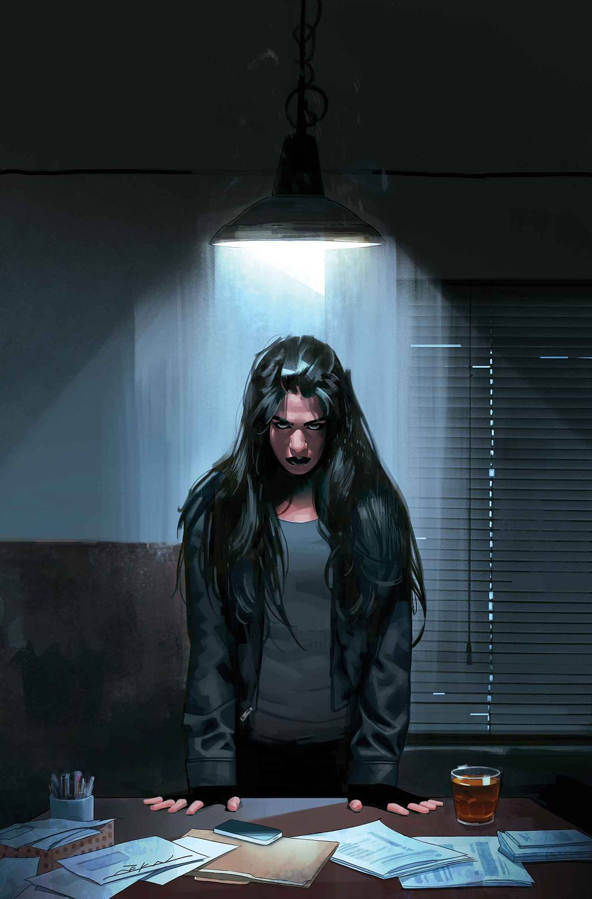
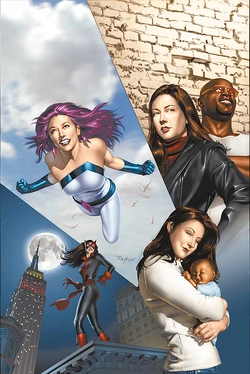
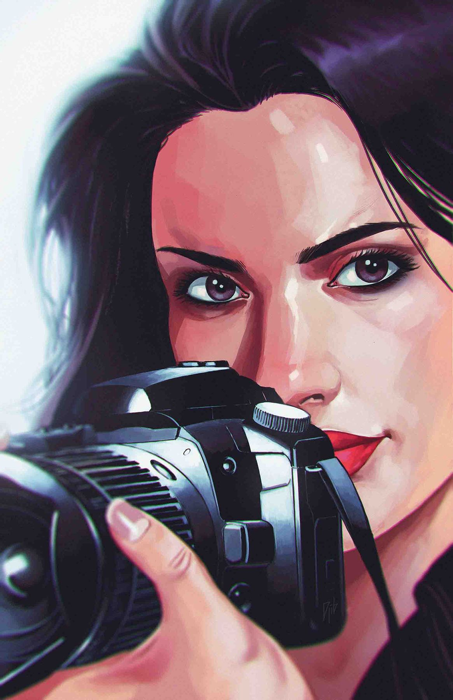
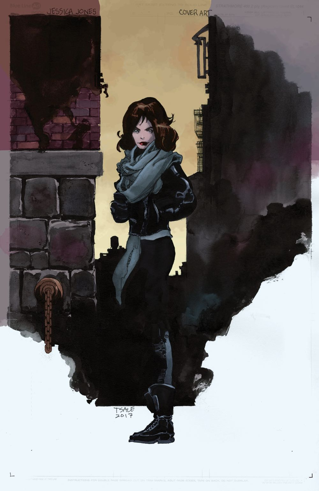
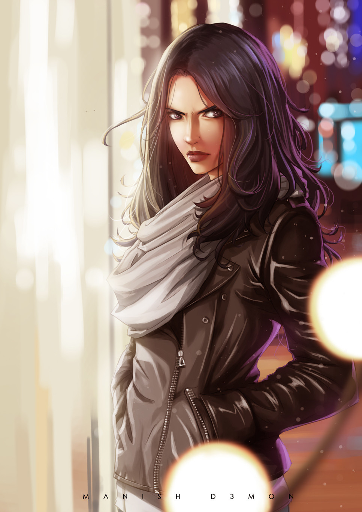
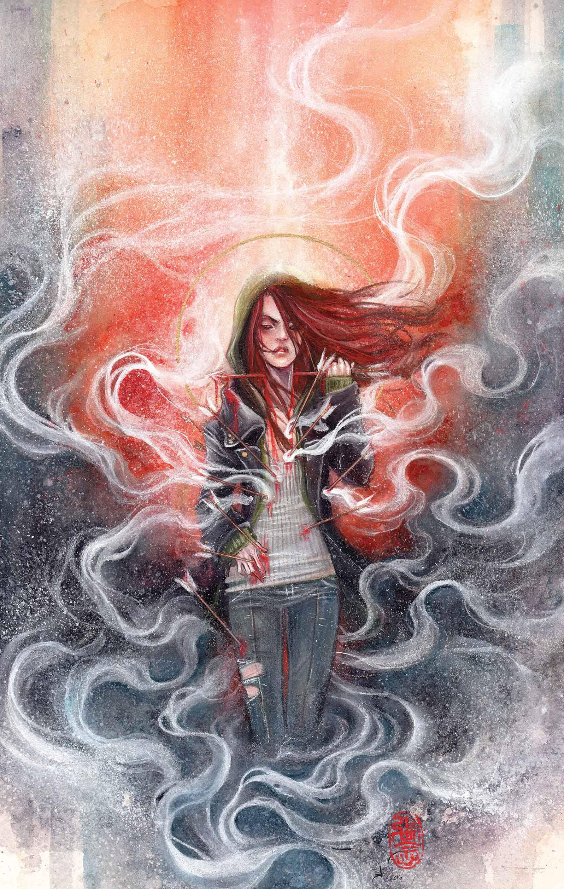
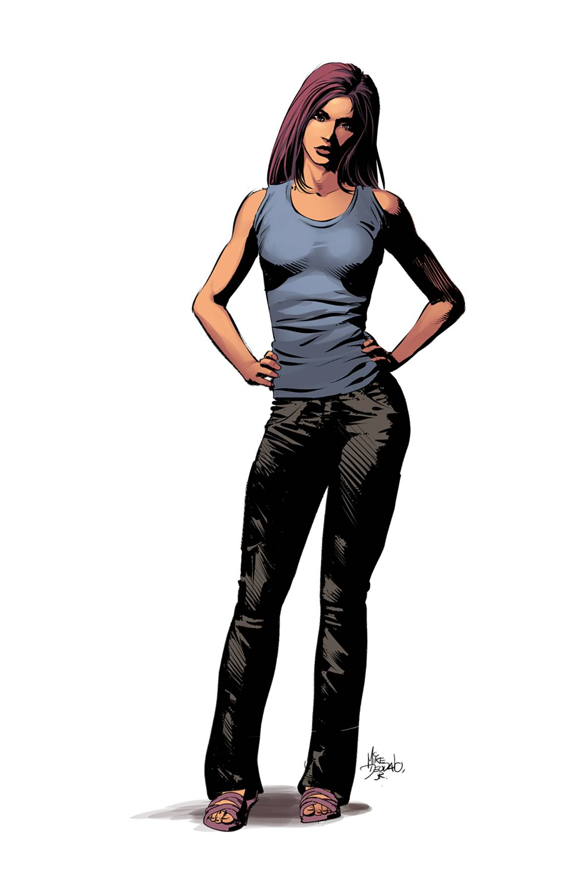
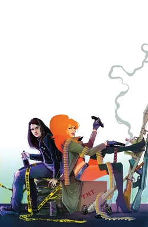
Personnalité :
Jessica Jones est souvent décrite comme une femme cynique, méfiante et profondément marquée par son passé traumatisant.
Elle adopte une attitude froide et un humour sarcastique, qu'elle utilise comme une barrière pour tenir les autres à distance pour éviter de montrer ses failles.
C'est une femme indépendante, déterminée, et refuse généralement l'autorité, préférant fixer ses propres règles, même si cela implique des méthodes dures ou discutables.
Malgré ses traumatismes, elle fait preuve d'une grande lucidité sur elle-même et sur le monde qui l'entoure, ce qui renforce son côté désabusé mais également sa force mentale.
Sous cette carapace, Jessica possède un sens moral sincère et une loyauté profonde : elle protège farouchement les personnes auxquelles elle tient, quitte à se mettre en danger, ce qui fait d'elle une alliée fiable mais difficile à approcher et à comprendre.
Capacités :
Après un accident de voiture, Jessica Jones a été exposée à des produits chimiques expérimentaux et plongée dans un profond coma.
Cet accident a développé chez-elle des capacités surhumaines, comme une force et une résistance accrues.
Elle a également acquis la capacité de voler, et après avoir passé huit mois sous le contrôle mental de l'Homme Pourpre, elle est également devenue capable de résister aux contrôles mentaux.
Elle est assez forte pour soulever jusqu'à 10 tonnes, et possède une capacité de guérison plus rapide que la moyenne.

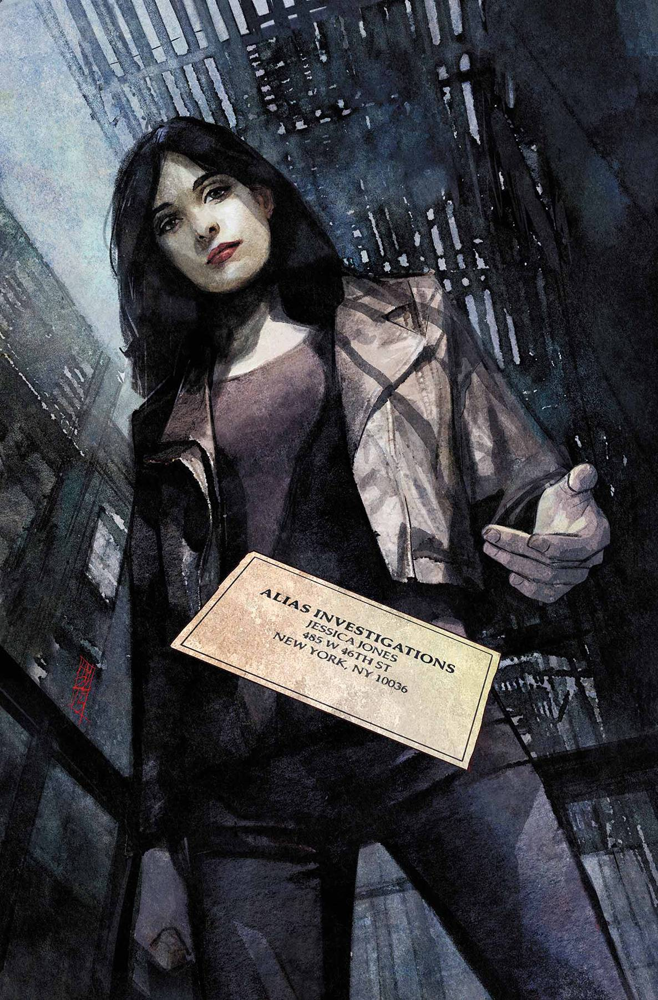
Costume :
Jessica Jones se distingue des autres super-héros par une apparence très éloignée des costumes traditionnels, et privilégie des vêtements du quotidien.
Elle apparaît souvent avec une veste en cuir sombre, souvent noire, avec un jean simple et des bottes, et parfois une paire de gants, ce qui est complètement en accord avec sa vie de détective privée.
Les principaux ennemis de Jessica Jones
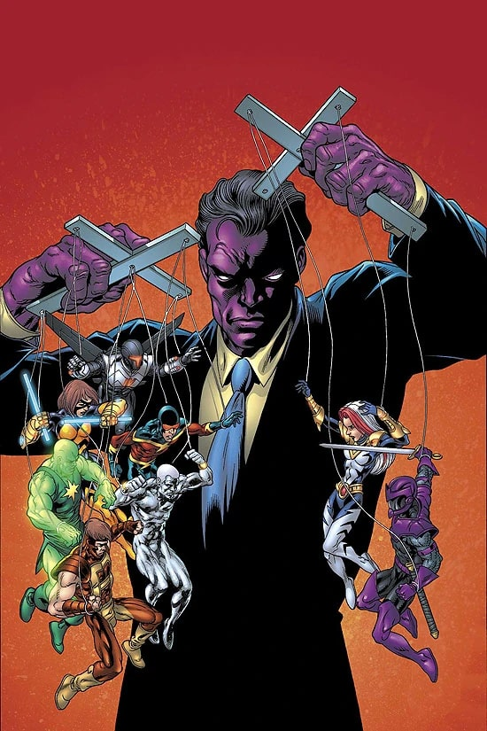
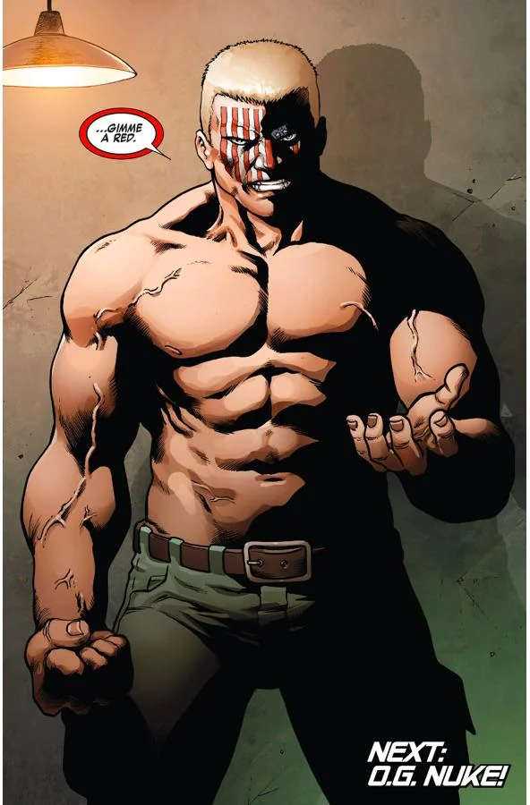
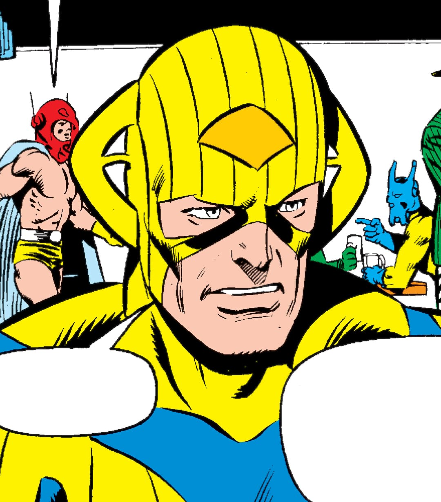


Équipes affiliées